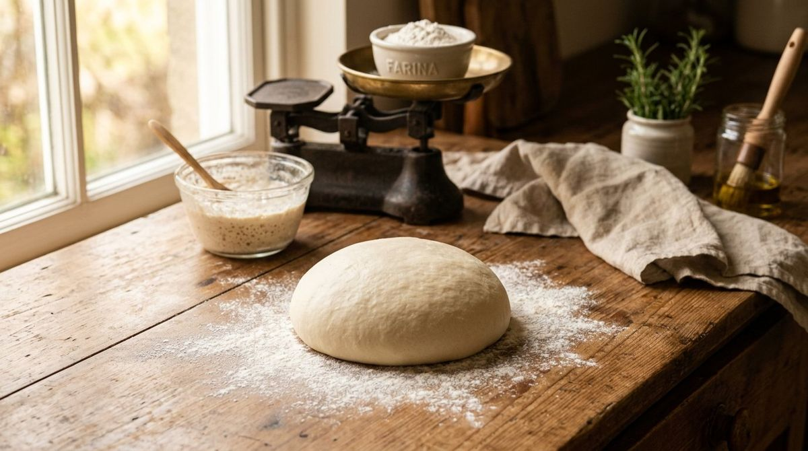
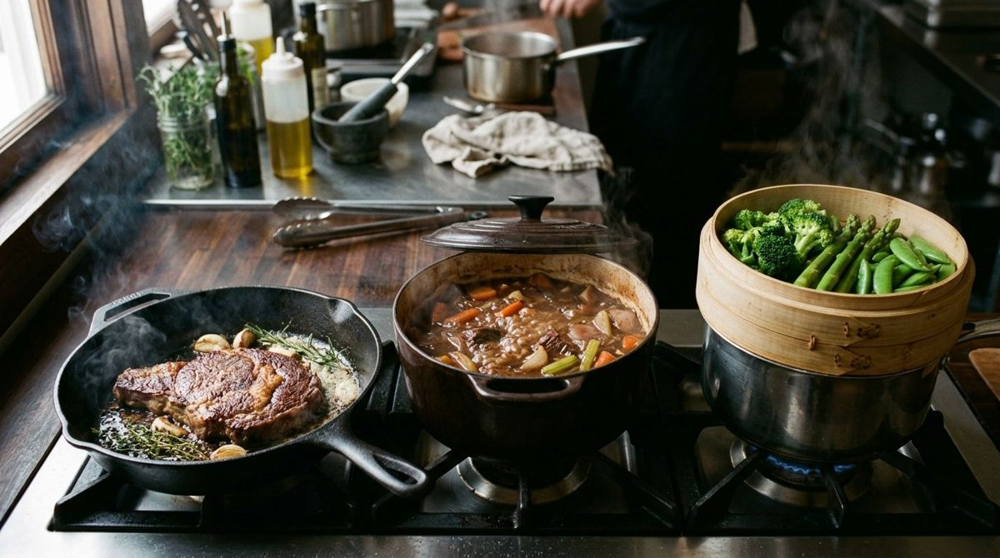
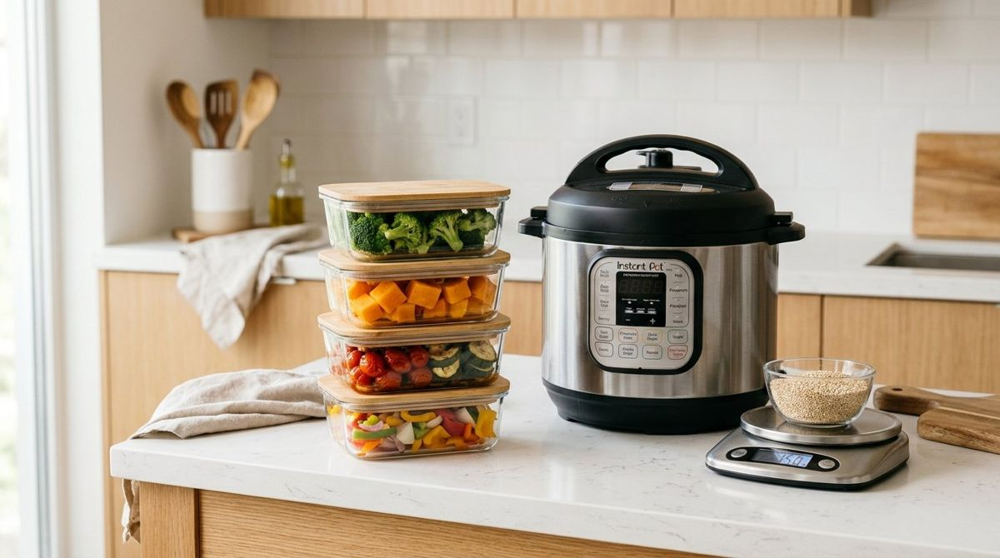

Segreti e tecniche in cucina
Tecniche di cottura, trucchi per impasti, salse e creme, errori comuni e consigli per risparmiare.

ImpastiImpasti perfetti: i segreti per pane e pizza fatti in casaScopri la scienza dietro l'impasto perfetto. Dalla scelta della farina alla gestione delle temperature, ecco i consigli del tecnologo alimentare per pane e pizza fatti in casa. Salse e cremeSalse e creme senza grumi: tecniche e rimediDalla besciamella alla crema pasticcera, scopri le tecniche professionali e i fondamenti scientifici per eliminare i grumi e ottenere salse perfette ogni volta.
Salse e cremeSalse e creme senza grumi: tecniche e rimediDalla besciamella alla crema pasticcera, scopri le tecniche professionali e i fondamenti scientifici per eliminare i grumi e ottenere salse perfette ogni volta.
Tecniche di cotturaRosolare, brasare, cuocere a vapore: quando usare ogni cotturaDalla crosticina saporita della rosolatura alla delicatezza del vapore: scopri come calore e umidità trasformano i tuoi piatti, tra scienza e gusto.
RisparmioRisparmiare tempo, energia e denaro in cucinaScopri come ridurre sprechi e bollette in cucina grazie alle tecniche di meal prep, cottura passiva e gestione razionale della dispensa.